clienti/
Collaborazioni come progettista grafico freelance in dialogo con la committenza.
Venturagrumi è una piccola azienda agricola basata nel catanese con dei punti vendita al nord, dove esporta direttamente i suoi prodotti bio e artigianali prodotti in Sicilia. Il design delle etichette mantiene un'estetica essenziale, chiara e pulita. La forma principale del vulcano presente nel marchio si ripropone come elemento grafico caratterizzante, garantendo riconoscimento immediato e identità tra i vari prodotti.
- Tipologia etichetta
- A fascia
- Dimensioni
- L:10,5 cm A:4,8 cm
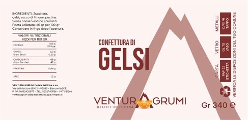
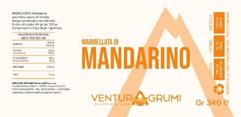
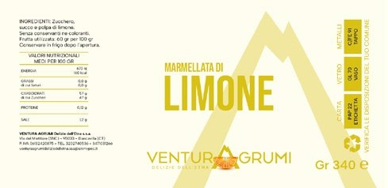
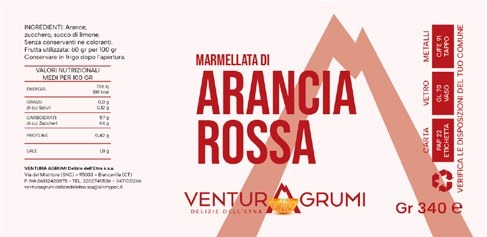
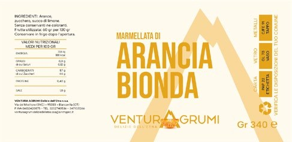
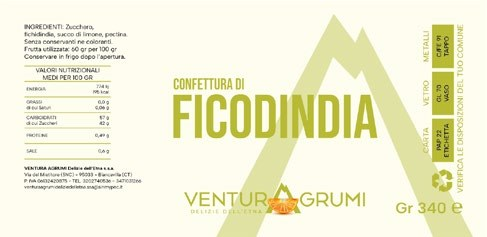
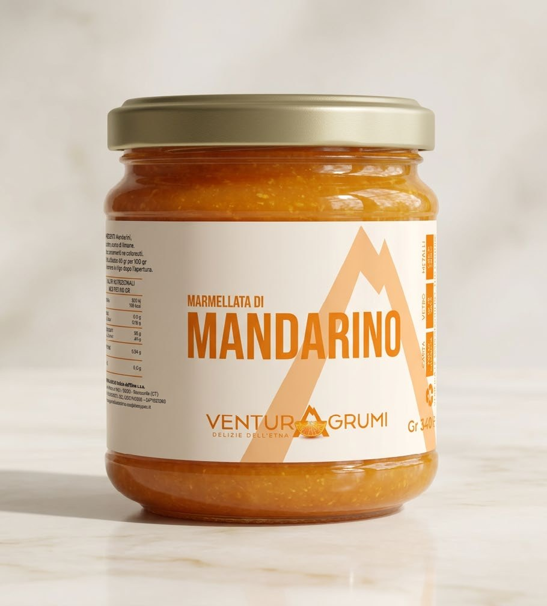
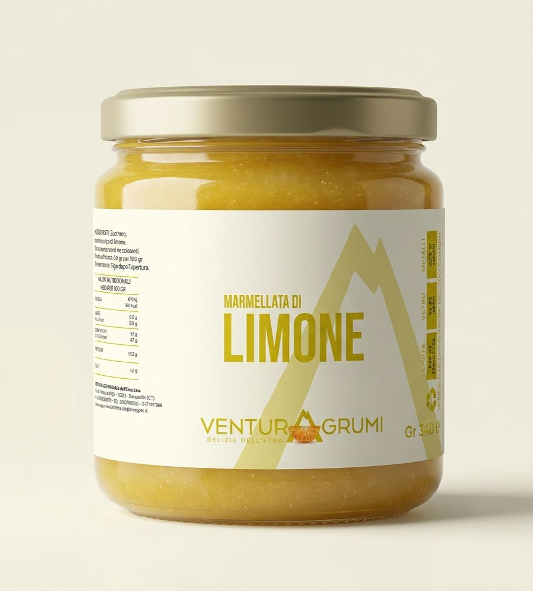
Venturagrumi è una piccola azienda agricola basata nel catanese con dei punti vendita al nord, dove esporta direttamente i suoi prodotti bio e artigianali prodotti in Sicilia. Il design delle etichette mantiene un'estetica essenziale, chiara e pulita. La forma principale del vulcano presente nel marchio si ripropone come elemento grafico caratterizzante, garantendo riconoscimento immediato e identità tra i vari prodotti.
- Tipologia etichetta
- Fronte/retro
- Dimensioni fronte
- L:12 cm A:15 cm
- Dimensioni retro
- L:8 cm A:13 cm
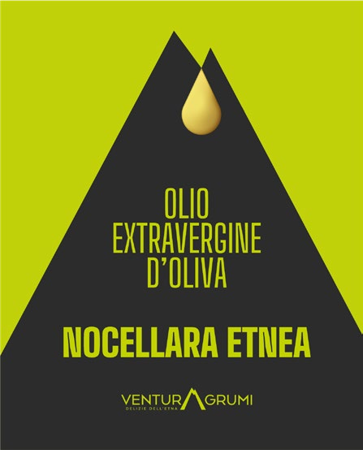
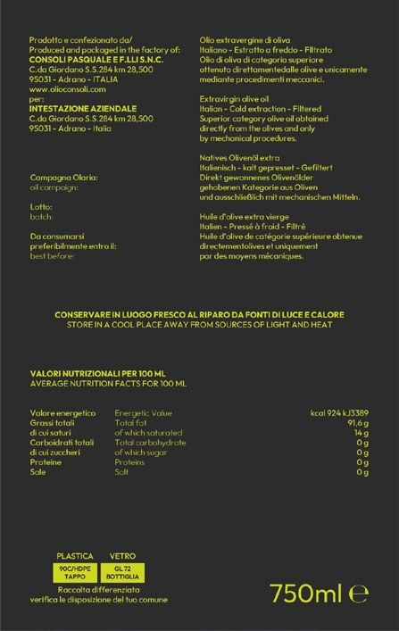
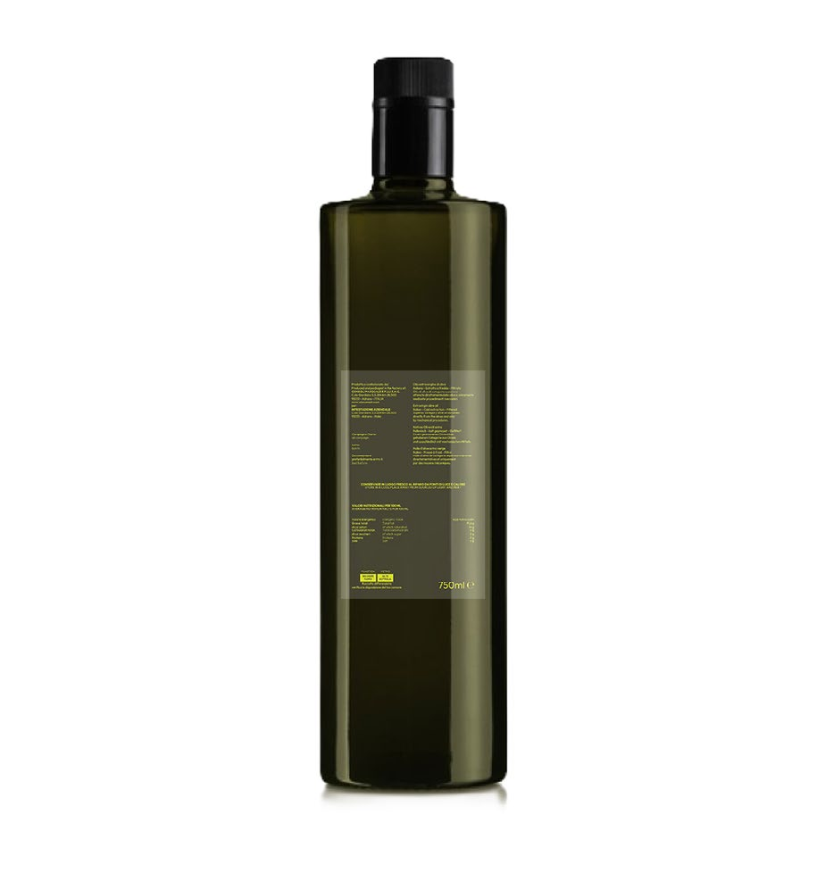
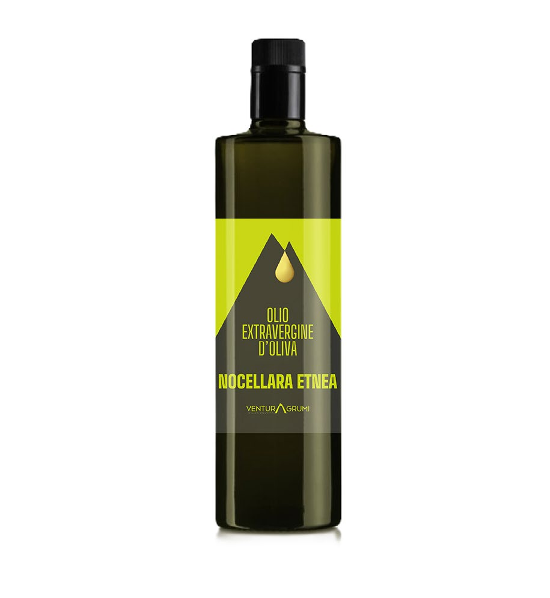